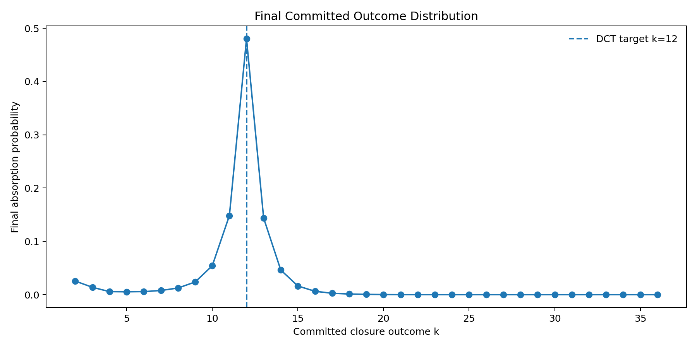
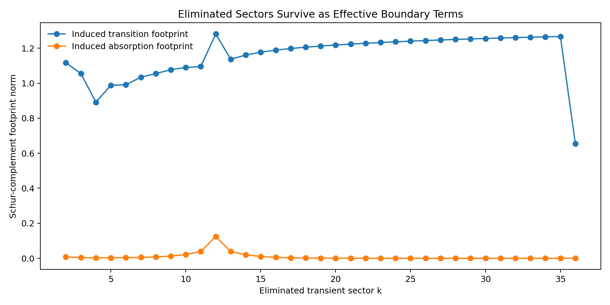
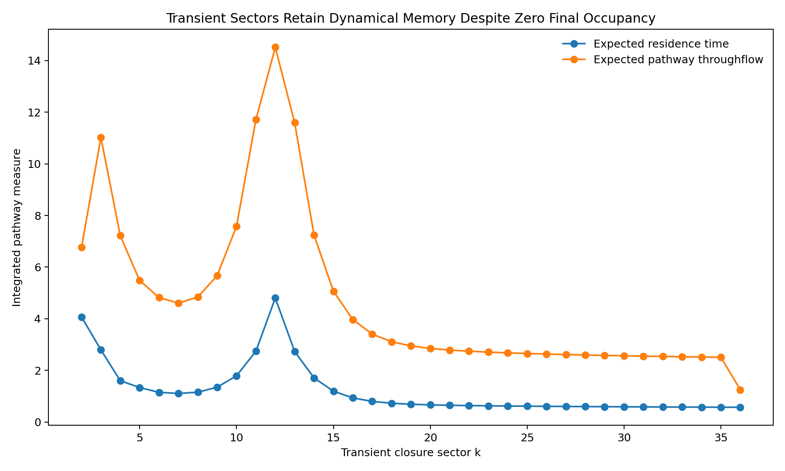

Entry 10
Transient-State Causality and Boundary Footprints
Entry 10 tests the original Dynamic Closure hypothesis in a form that can be distinguished from terminal-state occupancy.
entry_10
Outputs folder: output
Figures
Click any figure to enlarge it.

final_absorption_probabilities.png
{kind=link}

schur_boundary_footprints.png
{kind=link}

transient_pathway_memory.png
{kind=link}
Tables
Embedded previews of CSV/TSV outputs with links to the full raw files.
| k | defect_D | blocked_target_probability | causal_effect_on_target | relative_causal_effect |
|---|---|---|---|---|
| 3 | 1.5040773967762742 | 0.41547589911577054 | 0.06477677444708668 | 0.13488061183819408 |
| 4 | 1.6739764335716716 | 0.3934038842322507 | 0.08684878933060652 | 0.18083978312145604 |
| 5 | 1.6094379124341003 | 0.3857674759612417 | 0.0944851976016155 | 0.1967405967793096 |
| 6 | 1.5040773967762742 | 0.3863635473697808 | 0.09388912619307643 | 0.1954994346966147 |
| 7 | 1.3268709406490897 | 0.38797857807465647 | 0.09227409548820076 | 0.19213655762423068 |
| 8 | 1.114360645636249 | 0.38620386521251615 | 0.09404880835034107 | 0.19583193083053524 |
Preview only — rows truncated. Open full file
| k | defect_D | initial_transient_probability | expected_residence_time | expected_throughflow | long_time_transient_occupancy | commitment_hazard | final_absorption_probability | … |
|---|---|---|---|---|---|---|---|---|
| 2 | 1.3862943611198906 | 0.5 | 4.071104494164369 | 6.762963503825182 | 1.1042313328408724e-19 | 0.00625 | 0.025444403088527308 | … |
| 3 | 1.5040773967762742 | 0.0 | 2.794847958628314 | 11.018515555413202 | 8.376544063645615e-20 | 0.004938271604938271 | 0.013801718314213892 | … |
| 4 | 1.6739764335716716 | 0.0 | 1.6009304792304775 | 7.215744799898491 | 5.3727863543743864e-20 | 0.003515625 | 0.005628271216044648 | … |
| 5 | 1.6094379124341003 | 0.0 | 1.3360358084956034 | 5.4793797474868 | 5.147406919523718e-20 | 0.004000000000000001 | 0.005344143233982415 | … |
| 6 | 1.5040773967762742 | 0.0 | 1.1496697416828305 | 4.820212707834634 | 5.1331699665999934e-20 | 0.004938271604938271 | 0.005677381440409038 | … |
| 7 | 1.3268709406490897 | 0.0 | 1.108468521613896 | 4.606584679187285 | 5.778405398831409e-20 | 0.007038733860891298 | 0.007802214916815847 | … |
Preview only — columns truncated, rows truncated. Open full file
| k_2 | k_3 | k_4 | k_5 | k_6 | k_7 | k_8 | … | |
|---|---|---|---|---|---|---|---|---|
| k_2 | 0.0 | 3.618759550368327 | 0.0 | 0.0 | 0.0 | 0.0 | 0.0 | … |
| k_3 | 3.144203953456854 | 0.0 | 2.35815296509264 | 0.0 | 0.0 | 0.0 | 0.0 | … |
| k_4 | 0.0 | 1.8973990864953807 | 0.0 | 1.707659177845843 | 0.0 | 0.0 | 0.0 | … |
| k_5 | 0.0 | 0.0 | 1.252533570464628 | 0.0 | 1.4844842316617815 | 0.0 | 0.0 | … |
| k_6 | 0.0 | 0.0 | 0.0 | 1.0347027675145477 | 0.0 | 1.3725648956825633 | 0.0 | … |
| k_7 | 0.0 | 0.0 | 0.0 | 0.0 | 0.9284608129757418 | 0.0 | 1.3709304191594938 | … |
Preview only — columns truncated, rows truncated. Open full file
| comparison | pearson_correlation |
|---|---|
| causal effect vs expected residence | 0.8120454804241606 |
| causal effect vs pathway throughflow | 0.8191683449200612 |
| causal effect vs Schur boundary footprint | -0.8237141760675956 |
Preview only. Open full file
| k | transition_boundary_footprint | absorption_boundary_footprint | total_boundary_footprint | maximum_induced_transition | maximum_induced_absorption | absorption_statistics_preservation_error |
|---|---|---|---|---|---|---|
| 2 | 1.1171450737005433 | 0.007854926299456947 | 1.1171726883345126 | 1.1171450737005433 | 0.007854926299456947 | 4.434033644291502e-15 |
| 3 | 1.055553383635013 | 0.0037067443924631445 | 1.0555598920275988 | 0.6755541655264083 | 0.002965395513970516 | 4.601672200040853e-15 |
| 4 | 0.891699969850729 | 0.001966055595399336 | 0.8917021372669212 | 0.4926519170446016 | 0.001461357615256814 | 4.393185481282363e-15 |
| 5 | 0.9884654595321227 | 0.0027197126368636157 | 0.9884692011008122 | 0.5774036683176804 | 0.0020786532059436503 | 4.525182012730133e-15 |
| 6 | 0.991214542821947 | 0.0032739383150988807 | 0.9912199496447862 | 0.6320376461549542 | 0.0026143163162682483 | 4.545512324755344e-15 |
| 7 | 1.0347775105424286 | 0.004876088523870884 | 1.0347889990542414 | 0.7094000087148277 | 0.004037324763263709 | 4.9897543660930325e-15 |
Preview only — rows truncated. Open full file
| k | defect_D | initial_transient_probability | expected_residence_time | expected_throughflow | long_time_transient_occupancy | commitment_hazard | final_absorption_probability |
|---|---|---|---|---|---|---|---|
| 2 | 1.3862943611198906 | 0.5 | 4.071104494164369 | 6.762963503825182 | 1.1042313328408724e-19 | 0.00625 | 0.025444403088527308 |
| 3 | 1.5040773967762742 | 0.0 | 2.794847958628314 | 11.018515555413202 | 8.376544063645615e-20 | 0.004938271604938271 | 0.013801718314213892 |
| 4 | 1.6739764335716716 | 0.0 | 1.6009304792304775 | 7.215744799898491 | 5.3727863543743864e-20 | 0.003515625 | 0.005628271216044648 |
| 5 | 1.6094379124341003 | 0.0 | 1.3360358084956034 | 5.4793797474868 | 5.147406919523718e-20 | 0.004000000000000001 | 0.005344143233982415 |
| 6 | 1.5040773967762742 | 0.0 | 1.1496697416828305 | 4.820212707834634 | 5.1331699665999934e-20 | 0.004938271604938271 | 0.005677381440409038 |
| 7 | 1.3268709406490897 | 0.0 | 1.108468521613896 | 4.606584679187285 | 5.778405398831409e-20 | 0.007038733860891298 | 0.007802214916815847 |
Preview only — rows truncated. Open full file
Source files
Theoretical notes
Data files
No files in this category.
Other artifacts
No files in this category.